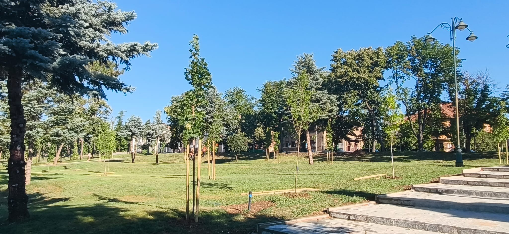
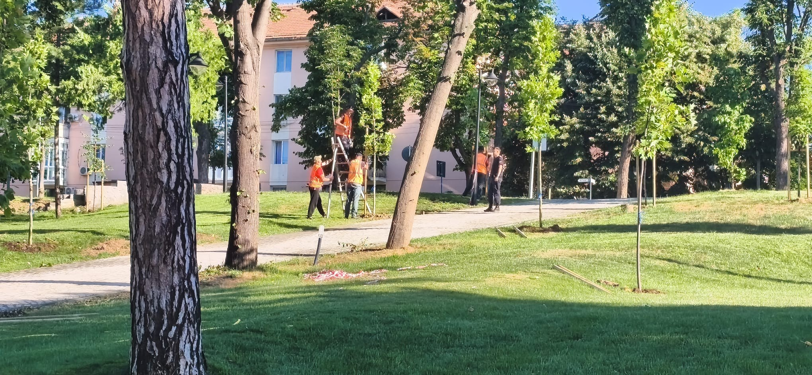
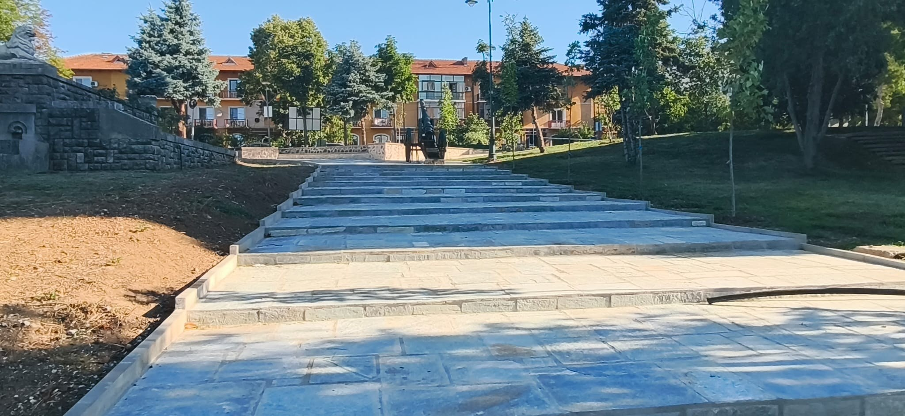
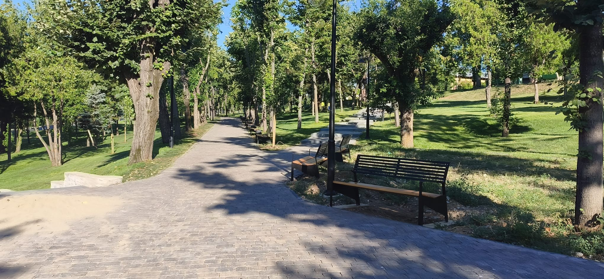

Lucrările de modernizare desfășurate în Parcul Rozelor din municipiul Drobeta-Turnu Severin se apropie de final, iar una dintre cele mai îndrăgite zone de recreere ale orașului va fi redată în curând comunității într-o nouă înfățișare.
În această perioadă, echipele de muncitori lucrează la ultimele detalii ale proiectului, care a vizat transformarea completă a parcului și crearea unui spațiu modern, sigur și atractiv pentru toate categoriile de vârstă.

Printre principalele lucrări realizate se numără înlocuirea stâlpilor și a corpurilor de iluminat public cu un sistem modern și eficient din punct de vedere energetic, montarea unui mobilier stradal nou – bănci, coșuri de gunoi și alte elemente de confort urban –, precum și refacerea integrală a peisagisticii.

Spațiile verzi au fost reamenajate, au fost plantați arbori, arbuști și flori ornamentale, iar aleile și zonele de relaxare au fost integrate într-un concept modern, menit să ofere locuitorilor un cadru plăcut pentru plimbare și petrecerea timpului liber.

Modernizarea Parcului Rozelor face parte din procesul amplu de revitalizare a spațiilor publice din Drobeta-Turnu Severin, investițiile având ca obiectiv creșterea calității vieții și dezvoltarea unei infrastructuri urbane moderne.
Odată cu finalizarea lucrărilor, Parcul Rozelor va deveni din nou un punct de atracție pentru severineni și pentru vizitatorii orașului, oferind un spațiu verde complet reamenajat, adaptat standardelor actuale de confort și siguranță.